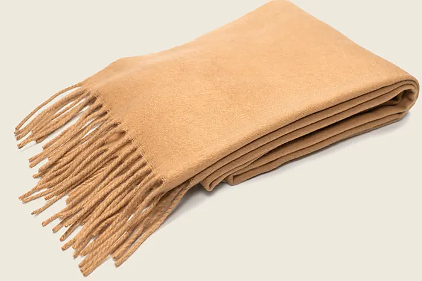

01 / 08 · 2/2 twill
Kirkbrae Twill
The mill’s working cloth, and the one the second loom is nearly always threaded for. Camel warp, oat weft: the diagonal reads at arm’s length and goes at three metres, which is the right distance for a coat to be plain. Straight draw on four shafts, treadled one, two, three, four. If you learn one draft, learn this one; half the range is this draft with a different colour order.
- Weight
- 410 g/m² finished
- Sett
- 22 ends/cm · 20 picks/cm
- Width
- 150 cm finished, from a 160 cm reed
- Shafts
- 4
- Yarn
- 2/16 Nm woollen-spun lambswool, camel warp, oat weft
- Finish
- Milled and raised
- Good for
- Coats, jackets, scarves and a plain blanket
- Lead time
- 3 to 4 weeks woven to order; a week from the beam
- Price
- £68 a metre, minimum two